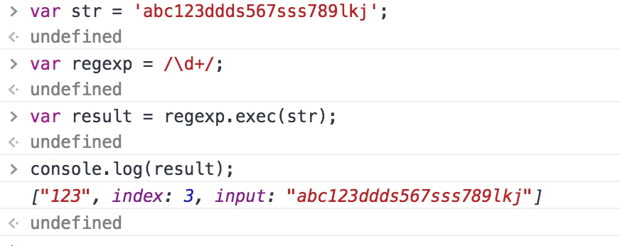
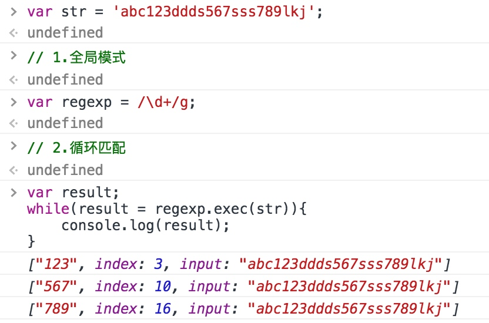
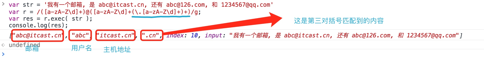
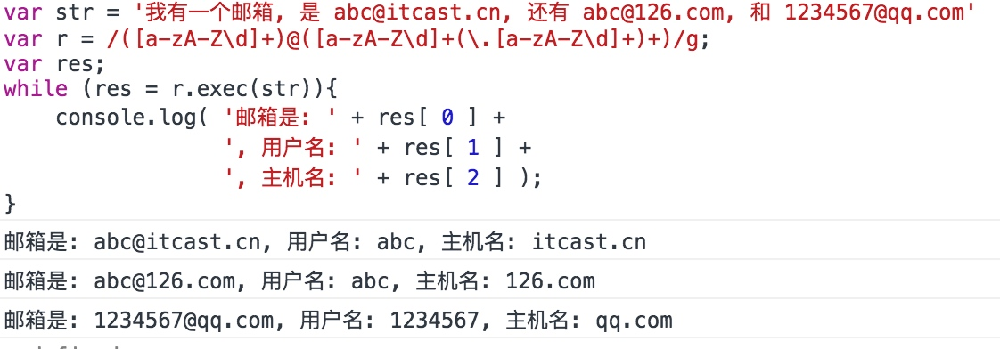
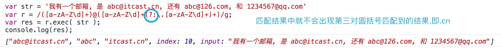
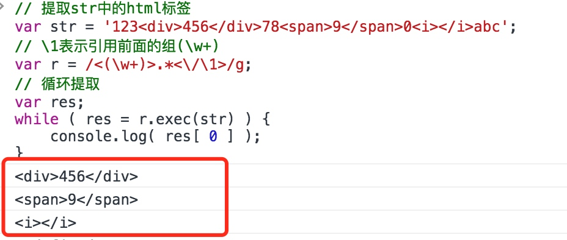

正则表达式
什么是正则表达式?
正则表达式就是一个用于查找的含有匹配字符串或匹配元字符的字符串
正则表达式对象
js正则表达式对象就是由正则表达式创建的对象，该对象可以进行匹配，提取和替换。
创建正则表达式对象
构造函数
var regex = new RegExp(正则表达式字符串);
eg:
var regex = new RegExp("abc");//匹配包含abc的字符串
正则字面量
var regex = /正则表达式/;
eg:
var rehex = /abc/; // 注意双斜线中的字符串不需要再用引号
正则表达式对象的基本使用
判断字符串‘abcdefghigkhshssgehshsgdjagsjsgahajdkadna’中是否包含某个特定的字符串
使用正则方式
// 匹配是否含有字符串js var str = 'abcdefghigkhshssgehshsgdjagsjsgahajdkadna'; // 1.创建正则对象 // var r1 = new RegExp('js'); // 构造函数形式 var r2 = /js/; // 字面量形式 // 2.开始检查匹配 var res = r2.test(str); console.log(res); // 如果包含则返回true 不包含返回false
元字符
基本元字符
.:表示任意一个非换行的字符foo. 可以匹配到以foo开头的任意字符串():表示分组和提高优先级[]:表示一个字符- 用法:[abc] 表示出现在[]中的任意一个字符 匹配a,或b,或c
可以认为是
.的带限制升级版[abc] 可以匹配到字符a或字符b或字符c
|:或的意思- 用法:正则表达式1|正则表达式2
可以认为是
[]匹配多个字符串的扩展版abc|123 可以匹配到字符串abc或123
\转义字符表示 .: \. 表示 [] : \[\] 表示 (): \(\) 表示 \ : \\
限定元字符
*: 紧跟前面的一个字符或一组字符出现0次到多次- 匹配一个字符正则:123* 前面一个字符3在后面出现的次数 12 0次 123 1次 1233 2次 12333 3次 - 匹配一组字符正则:1(23)* 前面一组字符23在后面出现的次数 1 0次 123 1次 12323 2次
+: 紧跟在前面的字符出现一次到多次,+号前面的这个也匹配正则123+ 123 1次 1233 2次？: 紧跟在前面的字符出现0次或1次q:在一段字符串中检查是否含有http协议字符串或https协议字符串 a1: http://.+|https://.+ 使用|匹配两者 a2: https?://.+ s出现0次或1次正好是http或https{数字}: 紧跟在前面的字符出现指定的次数正则a{3} 只能匹配到字符串中有aaa的 aabbcc 匹配不到 aaa 能匹配到 aaaaaa 不能匹配
{数字,}: 紧跟在前面的字符至少出现指定的次数正则a{3,} 可以匹配到字符串中至少出现了3个aaa的 aaa 能匹配到 aaaaaa 能匹配到{数字,数字}: 紧跟在前面的字符出现的次数范围正则a{1,3} 可以匹配到出现一次a 2次a 3次a的字符串 abc 能匹配到 aabc 能匹配到 aaabc 能匹配到
首尾元字符
^: 表示必须以指定的字符开始正则^a 匹配以a开头的字符串 abc 能匹配到 cba 不能匹配$: 表示必须以指定的字符结尾正则a$ 匹配以a结尾的字符 abc 不能匹配 cba 能匹配到案例
^a+$: 匹配全是a的字符串var reg = /^a+$/; console.log(reg.test('a')); // true console.log(reg.test('abc')); // false console.log(reg.test('aaaaaa')); // true console.log(reg.test('baaa')); // false
简写元字符
\s: 空白字符(包括空格 tab 回车换行等)\S: 非空白字符[\s\S]表示任意字符\w: 表示字符,包含字母、数字、下划线\W: 非字符\d: 数字\D: 非数字
否定元字符(负向类)
不出现某个需要匹配的字符,使用
[^字符]
[^abc] 不是a不是b也不是c的字符
也就是只要不是abc三个字符中任意一个都可以匹配到
正则案例
匹配身份证
身份证是 18 位数字
省 市 区 出生年月 随机编码X
1) 首先是要做匹配, 就一定要使用 ^ $
2) 是 18 位数字( 0, 1, 2, 3, 4, 5, 6, 7, 8, 9 ). 可以使用 [0123456789]
还可以使用 0|1|2|3|4|5|6|7|8|9
3) 要求是 18 位. 限定 18 位, 即 {18}
组合: ^[0123456789]{18}$
如果最后一位是x
前面 17 位数字: ^[0123456789]{17}$
组合: ^[0123456789]{17}[0123456789x]$
匹配邮箱
名字 @ 主机名
1) 是要验证邮箱, 那么就需要使用 ^ $
2) 名字:
数字与字母
[0123456789]
[abcdefghi...]
[ABCDEFG...]
[] 里面的字符如果是编码序号连续的可以使用连字符连接
数字: [0-9]
[9-0] 错误的, 编码逆序
字母: [a-z]
[A-Z]
整合: [0-9a-zA-Z]
名字的变式方法: [0-9a-zA-Z]+
3) 主机名
主机名也是一串字符串或数字
但是它多了一个 .com .cn
3.1) 只有名字 [0-9a-zA-Z]+
3.2) 只含有一个 .什么
开始 \.
中间 [0-9a-zA-Z]+
只含有一个名字: \.[0-9a-zA-Z]+
3.3) 含有多个名字
.com.con.cc.c1.c2.c3
即 .什么 出现一次到多次
(\.[0-9a-zA-Z]+)+
最后主机名可以写成
[0-9a-zA-Z]+(\.[0-9a-zA-Z]+)+
最后整合一下
^[0-9a-zA-Z]+@[0-9a-zA-Z]+(\.[0-9a-zA-Z]+)+$
匹配数字
任意整数
1) 由于是匹配, 包含 ^ $
2) 首先第一个字符不允许是 0, 所以第一个可以写成 [1-9]
3) 后面的数字就是 [0-9]
4) 要求后面的数字出现 0 次到多次, 以匹配任意的 非 0 数字: [1-9][0-9]*
5) 由于还需要考虑 0, 因此写成 [1-9][0-9]*|0
6) 考虑 | 优先级最低: ^([1-9][0-9]*|0)$
^(-?[1-9][0-9]*|0)$
任意范围的整数
如果要匹配指定范围的数字, 那么需要将字符串结构进行分类
1) 0 要匹配的, 所以在正则表达式中有 0 这一项
2) 任意的 2 位数, 即 [1-9][0-9]
3) 任意的 1 位数, 即 [0-9], 可以将 第 1) 结论合并
4) 考虑 3 位数的时候, 只允许出现 1xx 的任意数, 而 2xx 的有限制
因此在分组, 考虑 1xx 的任意数, 可以写成: 1[0-9][0-9]
5) 考虑 2xx 的数字, 在 200 到 250 之间允许任意取. 所以
写成: 2[0-4][0-9]
6) 考虑 250 到 255, 写成 25[0-5]
^([0-9]|[1-9][0-9]|1[0-9][0-9]|2[0-4][0-9]|25[0-5])$
任意小数
要求, 小数不允许以 0 结尾
3.1415
[0-9]*[1-9]
^((-?[1-9][0-9]*|0)(\.[0-9]*[1-9])?)$
(aaa)? 这个内容出现或不出现
(aaa|) 也是表达aaa可出现可不出现
^((-?[1-9][0-9]*|0)(\.[0-9]*[1-9]|))$
提取(exec)
exec基本使用
- 作用:将匹配到的内容提取出来
语法:
正则对象.exec('字符串')返回一个装提取到的内容对象的数组eg: 从‘abc123ddds567sss789lkj’中提取数字 var str = ‘abc123ddds567sss789lkj’; var regexp = /\d+/; var result = regexp.exec(str); /*只能提取到一个*/

循环提取
- 循环提取:将所有符合要求的匹配内容提取出来
使用:
1.需要开启正则的全局模式 var r = new RegExp('正则','g'); var r = /正则/g; 2.循环调用exec 直到返回null案例:
eg: 从‘abc123ddds567sss789lkj’中提取数字 var str = ‘abc123ddds567sss789lkj’; // 1.全局模式 var regexp = /\d+/g; // 2.循环匹配 var result; while(result = regexp.exec(str)){ console.log(result); } /*每次匹配到的都是一个数组,数组中的第0项是匹配内容的对象*/

分组提取
将匹配到的结果进行解析,在正则中使用括号()进行分组,那么得到的结果将会是一个数组,数组的长度是正则中左括号出现的次数+1,第0项数据是整个正则的匹配结果,后续项分别是每一对括号匹配到的数据,其中从左向右出现的左括号分别被编号1,2,3...
// 提取出这个字符串中的邮箱 以及每一个邮箱的用户名和主机地址
var str = '我有一个邮箱, 是 abc@itcast.cn, 还有 abc@126.com, 和 1234567@qq.com'
var r = /([a-zA-Z\d]+)@([a-zA-Z\d]+(\.[a-zA-Z\d]+)+)/g;
var res = r.exec( str );
console.log(res);
/*单个提取*/

// 提取邮箱出这个字符串中的邮箱 以及每一个邮箱的用户名和主机地址
var str = '我有一个邮箱, 是 abc@itcast.cn, 还有 abc@126.com, 和 1234567@qq.com'
var r = /([a-zA-Z\d]+)@([a-zA-Z\d]+(\.[a-zA-Z\d]+)+)/g;
var res;
while (res = r.exec(str)){
console.log( '邮箱是: ' + res[ 0 ] +
', 用户名: ' + res[ 1 ] +
', 主机名: ' + res[ 2 ] );
}
/*提取出这个字符串中所有的邮箱*/

匹配但不捕获元字符
在组中添加
?:后,依旧会去匹配这个组,但是不会出现在结果中
// 提取出这个字符串中的邮箱 以及每一个邮箱的用户名和主机地址
var str = '我有一个邮箱, 是 abc@itcast.cn, 还有 abc@126.com, 和 1234567@qq.com'
var r = /([a-zA-Z\d]+)@([a-zA-Z\d]+(\.[a-zA-Z\d]+)+)/g;
var res = r.exec( str );
console.log(res);

反向引用
在正则表达式中使用组匹配到某一个数据,可以在该正则表达式中使用‘\数字’的方式引用该组,数字代表被引用组的编号
// 提取str中的html标签
var str = '123<div>456</div>78<span>9</span>0<i></i>abc';
// \1表示引用前面的组(\w+)
var r = /<(\w+)>.*<\/\1>/g;
// 循环提取
var res;
while ( res = r.exec(str) ) {
console.log( res[ 0 ] );
}

贪婪模式
凡是在正则表达式中, 涉及到次数限定的, 一般默认都是尽可能的多匹配.
取消贪婪模式. 在次数限定符后面加上 ?
注意: 贪婪模式性能会略高于非贪婪模式, 所以开发的时候. 一般不考虑贪婪的问题
只有代码匹配结果出现问题了, 一般一次多匹配了, 才会取消贪婪
- 多个贪婪在一起的时候的强度:第一个最强 后面强度一样
/(\d+)(\d+)(\d+)/.exec('1234567');
'12345','6','7'
- 取消贪婪模式
/(\d+?)(\d+)(\d+)/.exec('1234567');
'1','23456','7'